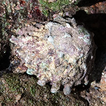

|
|
| shelled snails text index | photo index |
| Phylum Mollusca > Class Gastropoda > Family Turbinidae |
| Spurred
turban snail Astralium calcar Family Turbinidae updated Oct 2019 Where seen? This snail with a flattened wheel-shaped shell is sometimes seen on our offshore Southern islands, or rocky shores together with its relatives of the Family Turbinidae. Elsewhere, it is found on rocky shores and reefs. It was previously known as Astraea calcar. Features: 3-4cm in diameter. Shell thick, flattened conical shape. Calcar means 'spur' and indeed, the outer shell has a spiral of blunt bumps and spikes. The shell is usually encrusted and thus well camouflaged on the rocks. Underside of the shell with rings of small bead, shell opening white, smooth and pearly. Operculum small, chalky, hemi-spherical with a smooth glossy surface. Body pale with fine black stripes, long tentacles with fine black bars. Human uses: Sometimes gathered for food by coastal dwellers. |
 Berlayar Creek, Mar 09 |
 Berlayar Creek, Mar 09 |
 Cyrene Reef, Jul 12 |
| Spurred turban snails on Singapore shores |
On wildsingapore
flickr
|
| Other sightings on Singapore shores |
|
Links
References
|